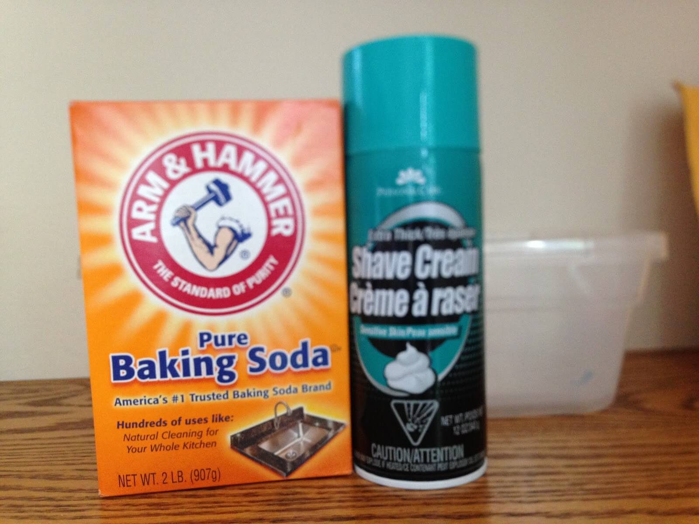

3 fun science projects for kids
Reagan Smith. 8/27/2020
(Little Bins for Little Hands) Fake snow can easily be made with shaving cream and baking soda, and we encourage you to experiment until you find the perfect recipe!
We’re five months into quarantine, and I don’t know about you, but I’m going a little stir-crazy. What better way to spend those long afternoons than to do science experiments! Here are three cool ones, aimed towards ages 4-10, and the science behind them.
1. Dissect the dye
You’ll need:
• Different black writing utensils (examples include Sharpies, whiteboard markers, pens)
• Drinking glass or cup
• 3 coffee filters, flattened out and cut to be slightly larger than the cup’s rim
• twisted strips of paper towel taller than the height of the cup
Steps:
• With one of the black writing utensils, draw a simple design on the coffee filter, avoiding the center point (Note: the color will ideally move out to the edges of the filter, so keep that in mind when drawing)
• Poke a hole in the coffee filter large enough to fit one end of the twisted paper towel through and push the tip of the towel through
• Fill the glass with water halfway up and place the filter/towel set up on top, making sure the paper towel sitting in the water, but the filter is resting along the cup’s rim
• Let it sit until the water reaches the coffee filter via paper towel, and observe what happens to the dye on the material
• Repeat with the other utensils
Here is an example of how to set up the chromatography lab. (Buggy and Buddy)
The science behind it:
Paper chromatography is the study of utilizing molecular attraction to separate substances. According to Chemistry LibreTexts, scientists use two phases in this type of study: a mobile phase and a stationary phase. The mobile phase is a liquid or gas that carries the dye through the stationary phase. In this case, the stationary phase is water, which attracts some molecules in the dye better than others and will therefore “carry” them further away from the center of the filter. The stationary phase here is the filter, which acts as the material through which the dye is carried. If molecules in the dye are more attracted to the filter than to the water, they won’t travel as far and will stick more to the stationary phase.
2. Coca Cola and Mentos Surprise
Note: you can also use salt and any other type of soda for this experiment
You’ll need:
• Large bottle of Diet Coke
• Pack of mentos
• Small tube, made from cardboard paper and tape, slightly larger than the mentos
• Flat surface outside that can get soda on it (such as grass)
Steps:
• Carefully open the Coke bottle
• Empty the mentos into the tube
• Quickly dump the mentos into the Coke bottle and stand back to watch the explosion!
The science behind it:
Adding mentos to Coca Cola disrupts the carbon dioxide (CO2) gas that is dissolved throughout the liquid in a process called nucleation, according to the American Chemical Society. There are existing air pockets within the soda, found in areas that aren’t touched by the liquid, like in small crevices, in which disrupted CO2 molecules diffuse into and expand, pushing the liquid rapidly up out of the bottle and creating an explosion. Because Mentos have a cratered surface, there are more areas for air pockets to form thus meaning CO2 gas has an easier time leaving the cola liquid and escaping out the top of the bottle.
3. Snow in August!
• You’ll need:
• Baking soda
• Shaving cream
• Mixing bowl
• Fork
• Food coloring (optional)

The two main ingredients you’ll need for snow. (Science 4 Superheroes)
The two main ingredients you’ll need for snow. (Science 4 Superheroes)
Steps:
1. Mix 1 cup baking soda with 1 cup shaving cream, using either a fork or whisk
2. Add in a few drops of water to reach a snow-like consistency
3. Optional: add in a drop of your favorite food coloring to make the snow colored!
The science behind it:
We recommend experimenting with various amounts and techniques you use to create your snow. Scientists developing new mixtures or inventions in the lab use the process of trial-and-error to hone in on the ideal creation, and you can do the same! What effect does adding more water have? Does the dye make any difference in the texture? Create your perfect snow recipe to make it feel like winter all year long.
This recipe was used from Left Craft Brain

Reagan is a junior from Sage Hill School. She is passionate about all things related to science, especially biology and medicine. She also loves being able to use her talents and knowledge to help others and make a difference in the world.